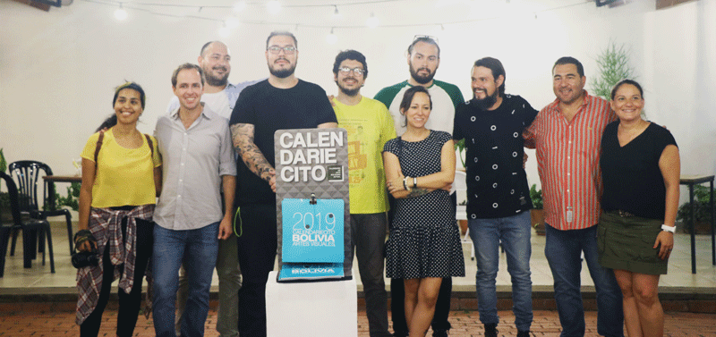

“Bienvenidos todos al CCFR”
En los alrededores de la Plaza 24 de septiembre y con un corazón en su entrada, se encuentra el Centro Cultural Feliciana Rodriguez. Hace unos días estuvimos charlando con Pablo Ángel Sánchez, responsable voluntario del CCFR, quien dedica su esfuerzo y tiempo al centro a través del proyecto Hombres Nuevos que ya lleva 26 años y está ubicado en el Plan 3000.
¿Qué es el proyecto Hombres Nuevos?
PA: Es un proyecto creado por el padre Nicolás Castellanos, obispo valenciano, que dejó su cargo en Valencia para crear un proyecto en el país del que se enamoró, Bolivia. Este proyecto, Hombres Nuevos se enfoca en la educación y la sanidad, y creemos que la cultura es un factor importante para el crecimiento personal.
¿Cuál es el desafío más difícil que tiene el centro cultural?
PA: El CCFR no es un lugar con renombre en Santa Cruz, los artistas buscan que su obra se exponga un lugar importante o que trabaje con la gobernación,pero si hay un espacio donde no ponemos tantos impedimentos a priori ¿Por qué la gente no acude?. Yo una vez fui a la facultad de Arte de la Universidad Gabriel René Moreno a ofrecer el espacio abiertamente a los estudiantes, y aún no han venido. Hay una falta de inquietud, ese ritmo la gente no lo tiene incorporado.
¿Cuáles son los requisitos para exponer en el Centro Cultural Feliciana Rodriguez?
PA: Sólo la presentación de una hoja de solicitud mínima, sobre todo se busca que los expositores sean artistas independientes, a los que les cueste llegar a otros espacios, no hacemos ninguna distinción, ya que todo trabajo es válido.
¿Qué se espera del Centro Cultural Feliciana Rodriguez en un futuro?
PA: Sobre todo que siga vigente, afortunadamente Feliciana por la localización que tiene y sus alquileres, que son precios muy adaptables, se auto sustenta, y como objetivo interno esperamos que además genere ingresos para apoyar a otras áreas del proyecto Hombres Nuevos. El objetivo externo es visibilizar a otros tipos de arte y que no sea todo tan clasista.
Finalmente ¿Qué piensas del proyecto Estereotipados?
PA: Me parece que es una muy buena iniciativa por parte de gente tan joven, que se preocupe por la difusión de una manera altruista, creo que es necesario y espero que se quede permanentemente. A veces yo entiendo que aquí los proyectos acaben, porque no se siente ese apoyo, que aunque tengamos buenas ideas a veces muchas puertas se van cerrando, yo los animo a seguir y si una puerta se cierra, por otro lado seguramente habrán puertas que se abren, así que mucha fuerza.
El Centro Cultural Feliciana Rodriguez, es un espacio donado al proyecto Hombres Nuevos por la mujer cruceña a la que le debe el nombre, amante del arte y a la que su sobrino le quiso seguir los pasos, convirtiéndose así en un espacio cultural que da cabida a aquellos artistas que deseen exponer sus obras en él y que espera con brazos abiertos a artistas y público en general.
El Centro Cultural Feliciana Rodriguez, es un espacio donado al proyecto Hombres Nuevos por la mujer cruceña a la que le debe el nombre, amante del arte y a la que su sobrino le quiso seguir los pasos, convirtiéndose así en un espacio cultural que da cabida a aquellos artistas que deseen exponer sus obras en él y que espera con brazos abiertos a artistas y público en general.
SHARE:
Categorías
MÚSICA 0
TEATRO 0
Publicaciones Recientes
-  Publicado : 07/05/2019
-
 Publicado : 10/01/2019
Publicado : 10/01/2019
-
 Publicado : 03/01/2019
Publicado : 03/01/2019
-
Publicado : 27/12/2018
-
 Publicado : 19/11/2018
Publicado : 19/11/2018
-
 Publicado : 18/11/2018
Publicado : 18/11/2018
-
 Publicado : 12/11/2018
Publicado : 12/11/2018
-

Museo el Altillo Beni abrió sus puertas al público este 5 de noviembre
Publicado : 9/11/2018
Tags
ENTREVISTAS MUSEOS LITERATURA CCFR LITERATURA TITO KURAMOTTO MUSEO DE ARTE CONTEMPORÁNEO CALENDARIECITO